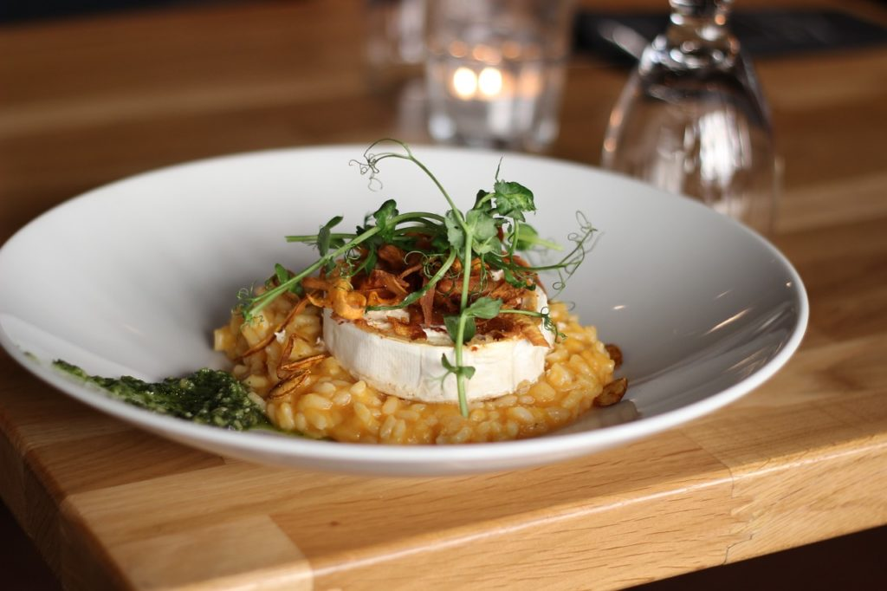
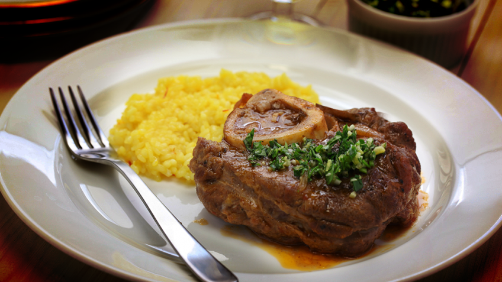
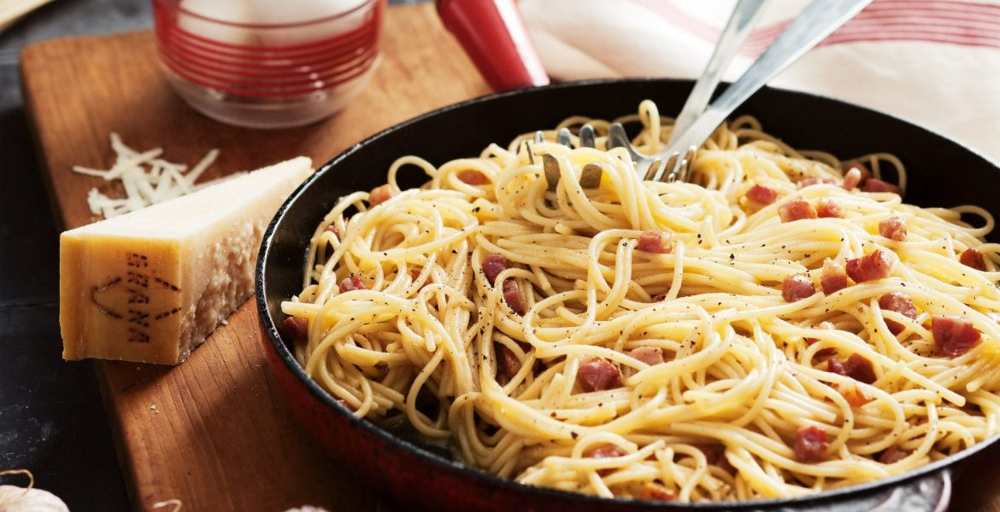

-
RissotoO risotto é um prato típico italino, sendo também o nosso prato chefe em vendas. Onde o mesmo leva ingredientes frescos como: Cebolas levemete fritas, arroz na manteiga de garrafa, servido deitado ao fundo de carnes ou legumes nobres.OssobucoO Ossobuco é um corte retirado da parte traseira do boi. Onde o mesmo é preparado com cenouras, cebolas, tomate caldo de carne, vinho branco nossa receita mais antiga, a polenta da casa.
-
MargueritaA pizza-marguerita é feita com ingredientes selecionados dos nossos forncedores para você, consumidor! Temos envolvimento dos melhores chef's italianos como o Kuhl's, e Moral's chef. essa receita leva uma massa leve, e concentrada recheada de sabor.CarbonaraNosso macarrão a carbonara se consiste em uma massa fina, feita com ovo, toucinho, onde utilizamos a banha do toucinho para reforgar e cozinhar nossos ingredientes assim, unindo os mesmos como um só.